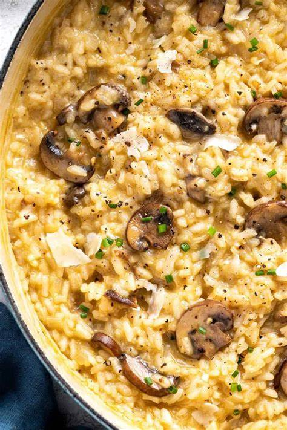

How to Cook

Spaghetti Carbonara
- 200g Dried Spaghetti
- 3 Large Eggs
- 100g Bacon/Pancetta
- 50g Parmesan cheese
- Black pepper

Chicken Alfredo
- 4 Chicken breasts cut in half
- 300g Fettuccine pasta
- 200ml Heavy cream
- 1 tbsp Butter
- 50g Parmesan cheese

Vegetable Stir-Fry
- 2 cups Broccoli florets
- 1 large Carrot, juilenned
- 1 Bell pepper(any colour), thinly sliced
- 1 Onion thinly sliced
- 2 tbsp Soy sauce

Mushroom Risotto
- 1 cup Arborio rice
- 8 oz Mushrooms sliced
- 4 cups Vegetable broth
- 1/2 cup White wine
- 1 Onion finely chopped